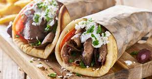

Gyro Recipe

A refreshing change
Ingredients
- ¼ cup chopped red onion
- 1 tablespoon minced garlic
- 1 tablespoon dried marjoram
- 1 tablespoon ground dried rosemary
- 2 teaspoons kosher salt
- ½ teaspoon freshly ground black pepper
- 1 pound 93%-lean ground beef
- 1 pound ground lamb
Instructions
- Preheat oven to 350 degrees F (175 degrees C).
- Process red onion in a food processor until finely minced. Scoop onion into a piece of cheesecloth and squeeze as much moisture from the onion as possible. Return onion to food processor; add garlic and process until the garlic is well integrated. Blend marjoram, rosemary, kosher salt, and black pepper into the onion mixture.
- Gradually blend ground beef and ground lamb with the onion and seasoning mixture by alternately adding small amounts of each meat to the mixture and processing until well incorporated before adding the next batch.
- Firmly pack the meat mixture into a loaf pan, assuring no air pockets are trapped in the meat.
- Bake in the preheated oven until no longer pink in the center, about 75 minutes. An instant-read thermometer inserted into the center should read at least 175 degrees F (80 degrees C). Drain grease and slice thinly to serve.